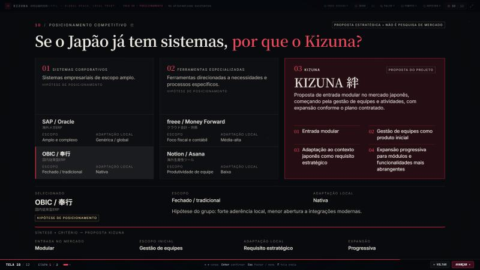
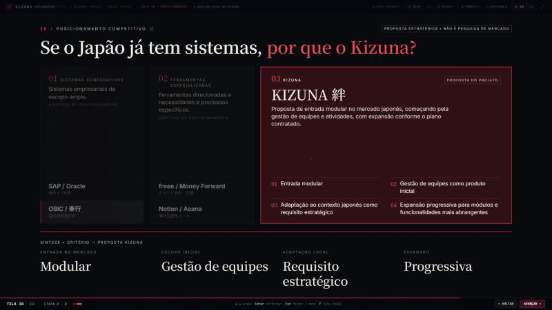
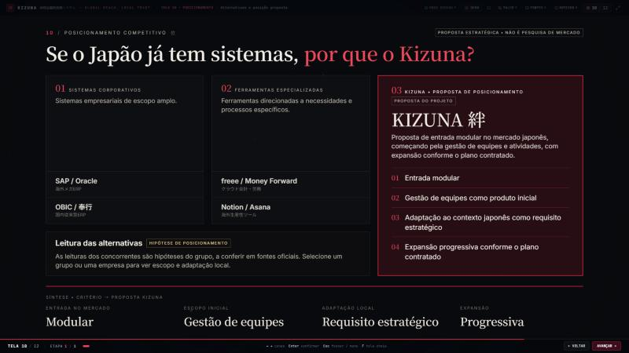
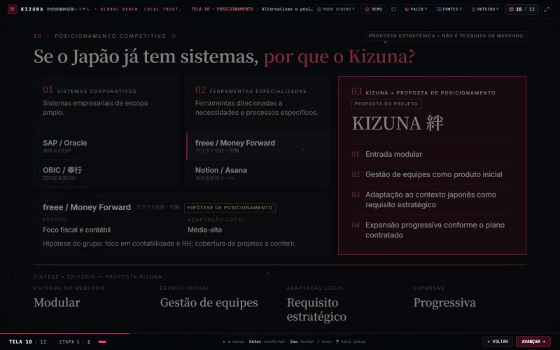
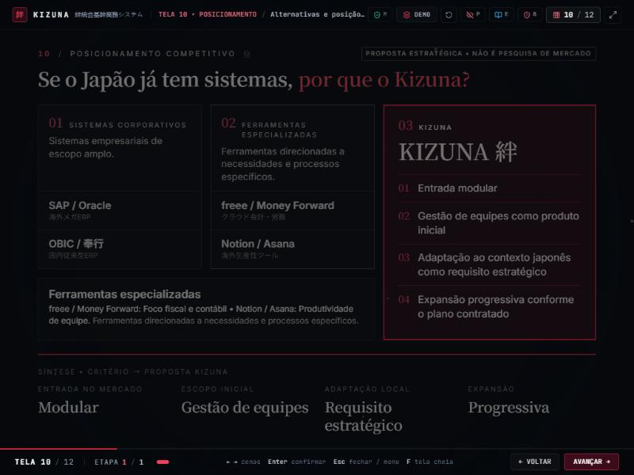
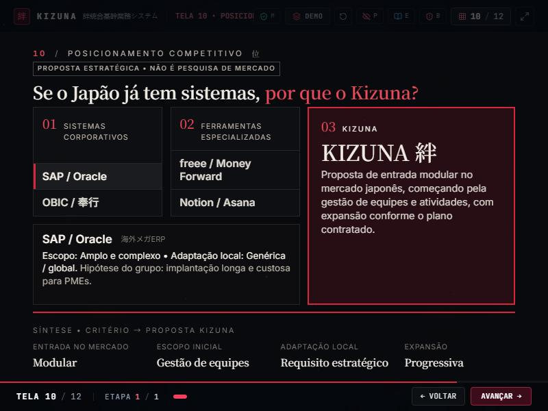

Tela 10 • de duas cenas para uma
Antes, 10.1 e 10.2 repetiam a mesma comparação com pequenas diferenças visuais. Agora uma única composição mostra os dois grupos, o Kizuna como coluna protagonista, um painel de contexto (que explica a natureza da comparação mesmo sem clique) e a faixa de síntese. A seleção só atualiza o painel.
Antes (duas cenas)


Depois (uma cena)




